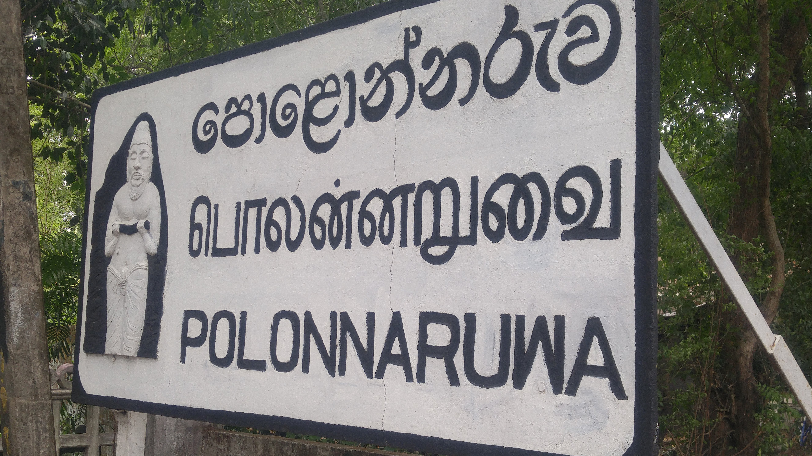
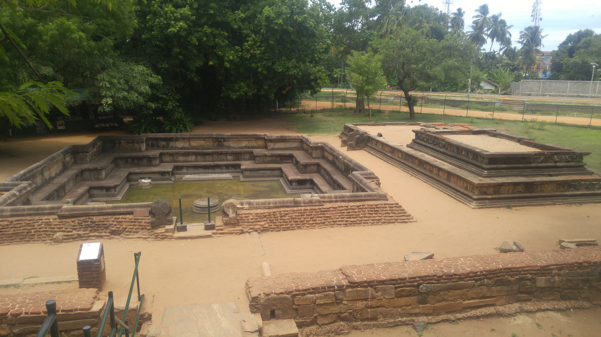
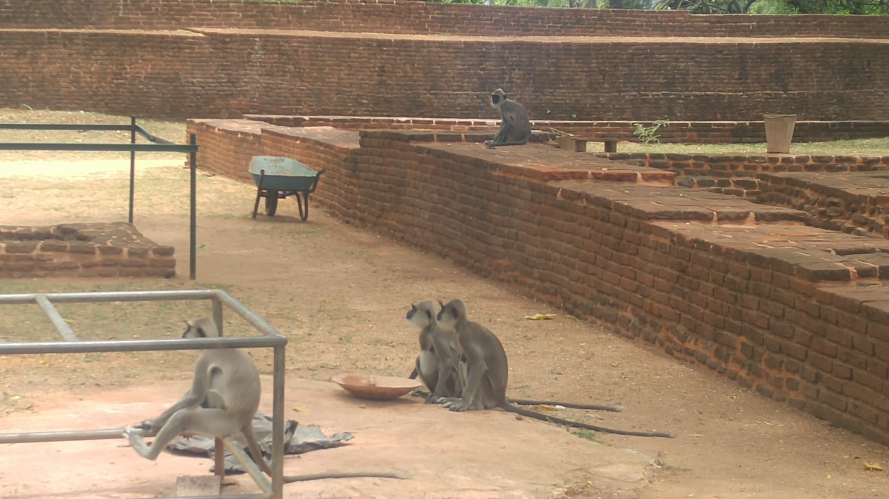
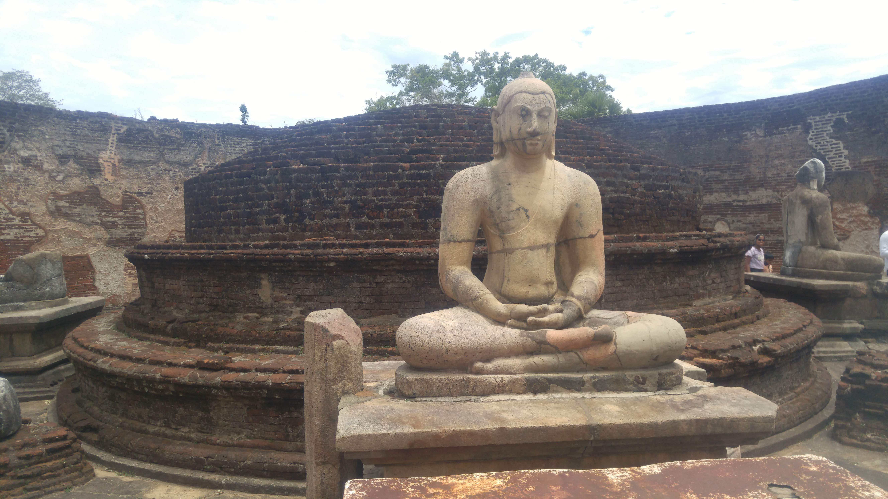
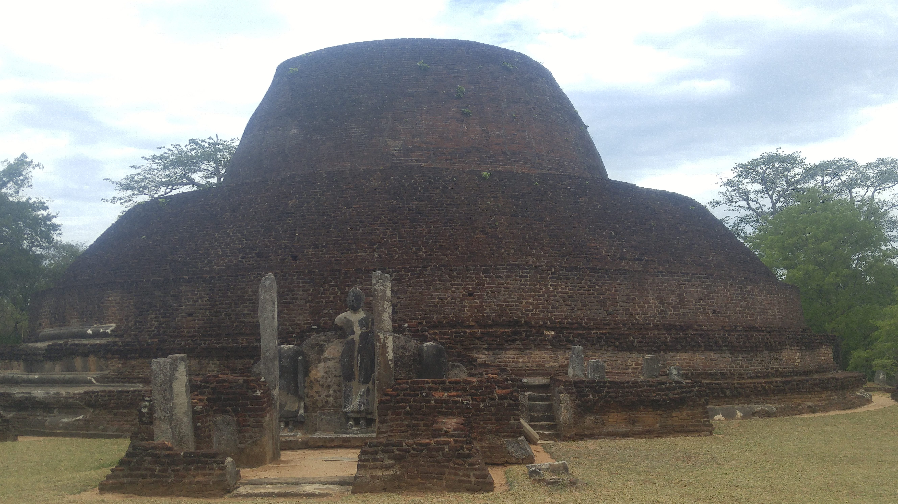
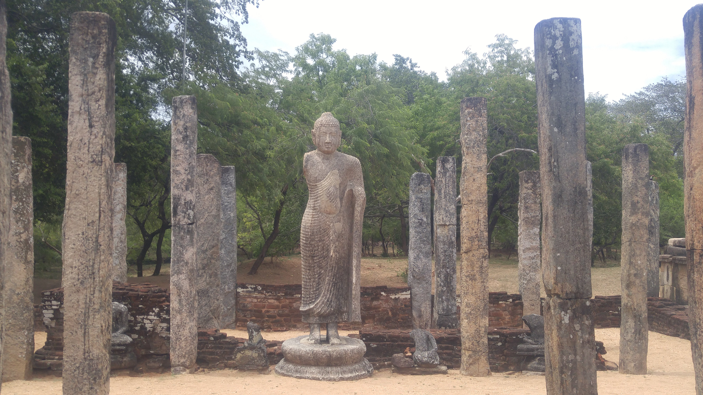
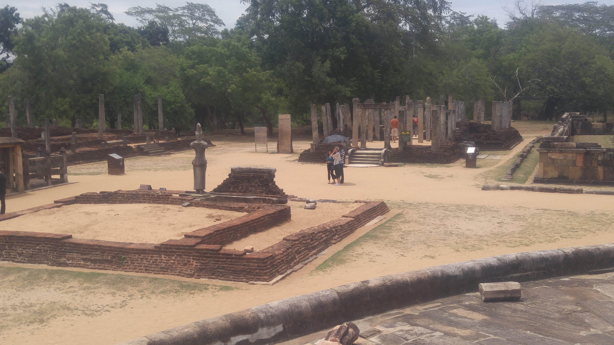
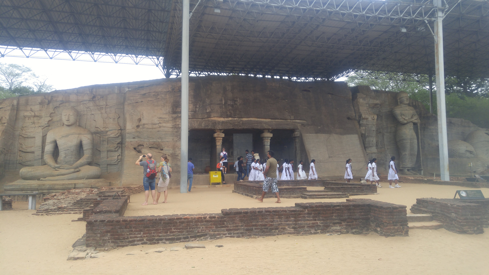
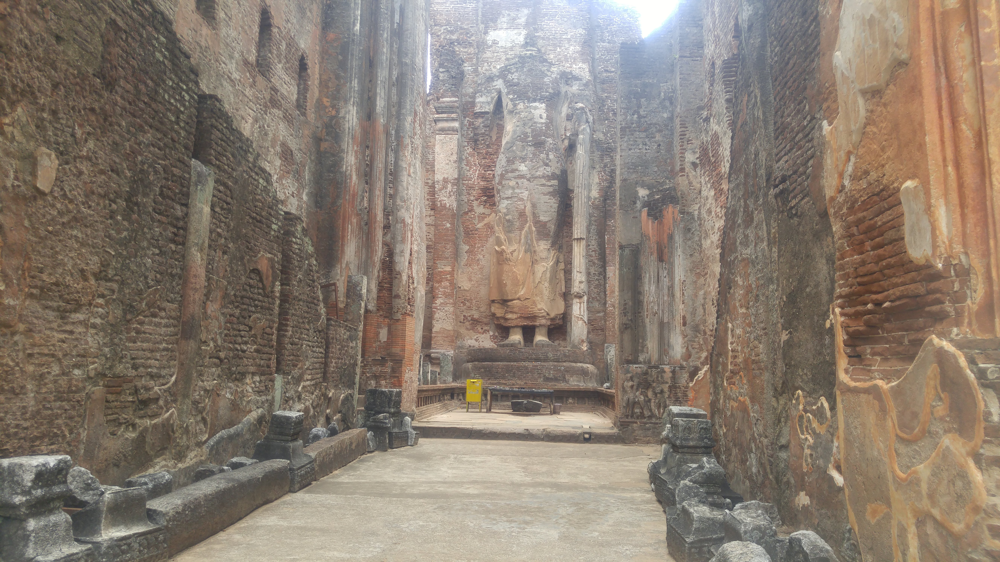
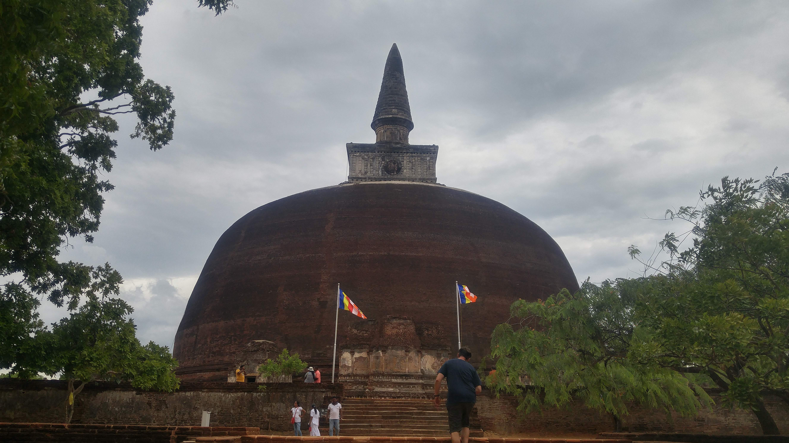

Polonnaruwa is a town in the North central province of Sri Lanka. It's about an hour away from Sigiriya. The modern town of Polonnaruwa is also known as New Town, and the other part of Polonnaruwa remains as the royal ancient city of the Kingdom of Polonnaruwa. The second oldest of all Sri Lanka's kingdoms, Polonnaruwa was first established as a military post by the Sinhalese kingdom. Nowadays the remains are a UNESCO world heritage site. You have to a buy a ticket at the ticket office before entering the archaeological site. It costs 3750 LKR to enter (about 10 usd). The site reminded me of places like Angkor Wat due to the large number of ancient ruins and temples. You can spend a few hours walking around exploring the different fascinating ruins. I arrived here from my accomodation in Sigiriya by motorbike but there are also tuk tuks and buses available to bring you to Polonnaruwa. Many tourists opt to spend a night or two in the town iself but it's also easy to visit on a day trip from the Sigiriya or Dambulla area. You'll be given a map when you pay the entry fee and this will help to guide you through the ruins.
Contents
Top Places to See
The first place you will most likely see when you enter is the royal palace (pictured below). This group of buildings dates from the period of King Parakramabahu I (1153-1186). The King`s Royal Palace is a massive structure, measuring 31 m by 13 m, once including 50 rooms supported by 30 columns. Today only some of the walls are left, with holes to hold floor beams for two higher levels.



After seeing the royal palace you can continue through the park and see the Audience Hall, swimming pool, Sacred Quadrangle, the Vatadage and Shiva Devale 2. In one corner of the palace grounds is the king's swimming pool. It features crocodile-mouth spouts used to lead fresh water into the pool. I wouldn't recommend actually swimming in it nowadays however as the water is a green colour (I doubt swimming would be allowed even if you wanted to). The Sacred Quadrangle is a group of impressive ruins within a raised up platform bounded by a wall. It's the most concentrated collection of buildings in the ancient city. In the middle of the Quadrangle is The Vatadage. The outermost terrace is an impressive 18m in diameter and has four entrances all flanked by large guard stones. The Vatadage is in very good condition. Shiva Devale 2 is one of the few Hindu temples on the grounds. Because it is among the few buildings built entirely of stone, it is basically in the same condition as when it was built.



As you continue you'll likely stop to see Pabalu Vehera, Rankot Vihara, Dagaba Kiri Vihara and Lankatilaka. The first three of these are dagabas which are dome-shaped shrines containing relics of the Buddha or a Buddhist saint. Pabalu Vehera is the third largest dagaba in Polonnaruwa, and in excellent condition. At 54 meters tall, Rankot Vihara is the largest dagaba in Polonnaruwa, the fourth largest in Sri Lanka, and dates back to King Nissanka Malla (1187-1196). The dagaba Kiri Vihara (meaning “milk-white”) was built in honor of the King`s Queen. When the archaeologists came to the area and cleared it from the overgrown jungle, they found the original white lime plaster still in perfect condition after 700 years! Lankatilaka has a cathedral like feeling to it even though the roof and some of the walls are missing. It was one of the larger buildings as the walls measure up to 17 meters tall. Most notably there is a large headless buddha statue here.



The last stop on the way out is to see the buddha statues at Gal Vihara. The standing Buddha (in the left picture below) is 7 m tall and is said to be the finest of the series, with its unusual position of the arms and sad facial expression. The reclining Buddha (pictured at the top of the page) is 14 m long, picturing Buddha entering Nirvana.


